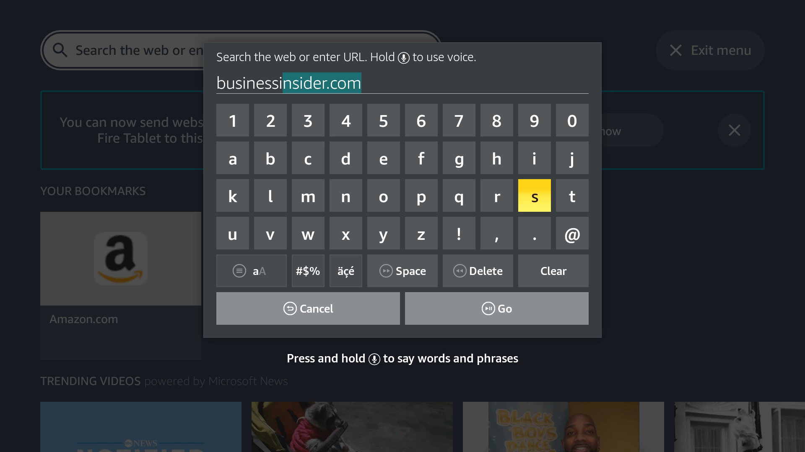
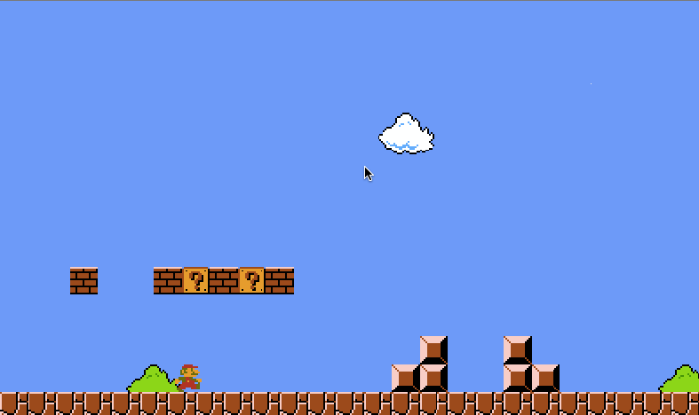

Browsing History
2021
Amazon · Silk Browser on Fire TV

Autocomplete Improvement
2021
Amazon · Silk Browser on Fire TV

AI Agent — Super Mario Bros
2018
COMP 380 Capstone · Macalester College
Beacon — 911 Location Detection
2017
1st Place · Macathon 2017, Macalester College

Cafeteria Menu Website
2015
Personal · Bugil High School, Korea